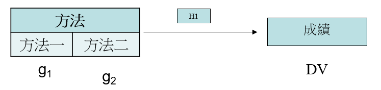

研究方法期中整理(2)
- 電話訪談不是一種研究方法，是一種資料收集的工具
- 問卷調查才是研究方法
- 各研究方法的精髓
- case的精神─找變數(explore)
- 對象不超過10個
- experiment的精神─操弄(分群)Manipulate＆控制(干擾變數)Control
- 少數的變數來做實驗(1、2個)
- 對象通常幾十個
- survey的精神─推論
- case的精神─找變數(explore)
- Control of Variance(總變異量的控制)
- 針對DV
- 因 → DV
- 實驗設計主要是在找什麼原因造成DV的數據不一樣
- 實驗結果(狀態改變)的變異來源（三個都是因)
- Treatment Variable—實驗變異(因子)
- 主要希望的原因
- 因-當IV-進假設
- 操弄Manipulate
- Extraneous Variable—干擾變異(因子)
- 因-當IV-不進假設
- 控制Control
- Error Variable—誤差變異
- 0.05的誤差可接受
- Treatment Variable—實驗變異(因子)
- 實驗設計的策略
- 使實驗變項的變異量最大 → 操弄
- 控制干擾變項、或予以排除，或予以析離 → 控制
- 誤差變異量最小
- 差異有一個特性 → 比較 → 分群 → 背後的邏輯 →一組當實驗組 → 一組當控制組
- 實驗設計都用差異的假設比較多
- 實驗因子有的可以定義分群(玩game時間) → arbitrary，有的自己會分群(性別) → natural
- IV只要有分群，它的假設一定是差異
- 實驗設計先做操弄，再做控制
- 隨機化(randomization)
- 無法避免干擾，就讓大家都一樣受到干擾，干擾所產生的變異就一樣
- 不是干擾不見
- 控制有兩個困難點
- 不確定是否能控制住干擾變數
- 不知道有哪些變項會干擾
- 效度總共有14種，我們碰到幾種？
- 實驗研究的效度
- Internal Validity(內部效度)
- 你有多少把握DV的變異，是從我要研究的IV來的
- 可能從干擾來
- 表示控制多少干擾
- 沒有進入假設的變數，你有控制好嗎
- 控制好內部效度高，控制不好內部效度低
- External Validity(外部效度)
- 能把我的實驗結果可以推論到外面的環境
- Lab experiment
- 在實驗室做實驗
- Internal Validity >>> External Validity
- Field experiment
- 在被研究者的場域做實驗，護理人員就在醫院，學生在學校
- Internal Validity <<< External Validity
- 內部效度與外部效度會平衡
- 內部效度 高 → 外部效度 低
- 內部效度 低 → 外部效度 高
- Internal Validity(內部效度)
- 實驗設計中的歷史效應(history)
- 做實驗的這段時間，有沒有特殊的事件，影響到DV，可是不在我的假設內
- 實驗設計中的成熟效應(maturation)
- 經驗增加，工作速度變快
- 熟練造成，不是因為某些因素造成
- 選樣偏差可能影響效度(selection)
- 志願者會往你想要的方向走測驗(testing)
- 測驗(testing)
- test-retest：同一份量表讓同一個人作2次再求其相關 (Coefficient of stability)
- 牽扯到human memory的問題
- 時間點(2個禮拜)
- 反作法效應
- 舉例分班，被分到升學班跟被分到放牛班，會造成本來是中等產生兩個結果
- 強亨利效應(the John Henry effect)
- 成績變得更好
- 控制組憤慨性的意志消沈(resentful demoralization)
- 成績變得更爛
- Hawthorne Effect(霍桑效應)
- 工廠研究燈光照明會不會影響到生產效率
- 實驗組變好 → 光線好 → 效率好 → 原因不是因為光線好 → 是因為他知道自己被做實驗
- population validity(母體效度)
- model
- 模式
- 沒什麼了不起
- 只能推回去原本的母體
- ecological validity(生態效度)
- 理論
- 很難
- 可以推到其他的母體
- population validity(母體效度)與ecological validity(生態效度)都是外部效度
- 內部效度重要 → 實驗室，外部效度重要 → 場域 ，兩個都重要 →實驗室再去場域
- 牽扯成本問題
- 成本牽扯到實驗設計(簡單、複雜)
- 研究架構
- 就是把變數連起來
- DV 我知道，IV我挑誰，把圖畫出來

{kind=link}
- 單因子變異數分析 (one way analysis of variance)
- 挑一個IV，把一個IV分群(操弄)
- 實驗組 對照組
- 做實驗設計幾乎不會用到相關
- 因為有做操弄，幫IV分群
- 比較 → 分群 → 看出差異
- 多因子實驗設計(factorial design)
- 個體特性與實驗處理交互效應設計(ATI)--Aptitude-Treatment Intuition
- 能操弄 arbitrary → 分群
- 不能操弄 natural →已分
- Two-Way ANOVA
- 每個操弄都分成兩群
- 2*2 ANOVA Test
- 3*3 ANOVA Test
- 如果某個分成2群，某個分成3群，就是2*3的Two-Way
- Hypothesis statement
- 測試順序，先測有沒有交互順序(Interaction Effect)
- 如果有Interaction，表示兩個交互作用會貢獻到main effect，就沒辦法下結論，產生干擾
- If have any interaction effect,then, you can not make conclusion for main effect.
- 不測了
- two-way 又3個假設、Three-way 有7個假設

- 獨立處理多因子實驗設計—independent factorial design
- IV跟IV之間沒有交互作用
- 如果是2*3 ANOVA Test
- 總共有24個人，可以被分配這6個底下，444444

- 重複量數多因子設計—repeated-measure design
- 如果我的實驗對象只有四個人
- 表示不夠分配到6個情境底下
- 實驗對象不足以分配到情境底下
- 四個人在每個情境底下都走一次
- 每個情境隔多久就有記憶(Memory)的問題，成人兩個禮拜，小孩一個禮拜
- 每一個分配到情況的數量，一定要要比DV的個數多一個(minimum sample size)

- within vs. between subjects design
- within subjects design
- 每一個實驗對象走不同的實驗情境
- between subjects design
- 不同的實驗對象走不同的實驗情境
- within subjects design
- 個體特性與實驗處理交互效應設計(ATI)--Aptitude-Treatment Intuition
- Experiment Symbol
- X－表示實驗處理
- IV , 操弄
- O－表示測驗或觀察
- DV
- R－表示隨機分派
- M－表示配對分組
- match
- 兩組中間用虛線區隔表示非等組

- X－表示實驗處理
- 實驗研究的類型與設計
- 前實驗設計類型(Pre-experiment)
- 沒有隨機分配實驗對象
- 單組後測設計(one-shot case study)
- 沒有做實驗，就吃完維骨力測靈活度
- 單組前、後測設計(one-group pretest-posttest design)
- 先測靈活度吃完維骨力在測一次靈活度
- 真實驗設計(True experiment)
- 有隨機分配實驗對象
- 僅為後測控制組設計(Posttest-Only Control Group Design)


- 前測－後測控制組設計 (Pretest-Posttest Control Group Design)


- Two-way ANOVA vs ANCOVA
- Non-Metric (分群)
- Metric (不分群)

- Two-way ANOVA vs ANCOVA
- 索羅門四組設計 (Solomon four-group design)

- 可以有6種比較，1跟4不能比，找不出原因，2跟3也不行，真正可以比的只有4種
- 準實驗設計(Quasi experiment)
- 場域(實驗)限制沒有辦法做隨機分配的動作
- 改另外一個方法，一個班級˙沒辦法隨機，就找個兩個班級去做實驗
- 時間序列設計 (Quasi-experiment)
- 拉著時間一直測
- 有點repeated-measure

- Rotation Experiment(對抗平衡設計)

- 特性:可以分配平均，分群的人數、時間點、操弄的分群一定要一模一樣
- 前實驗設計類型(Pre-experiment)